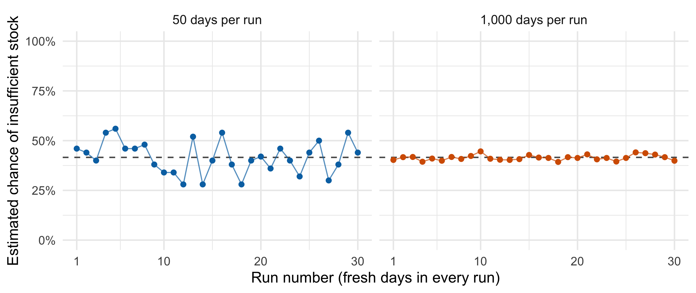
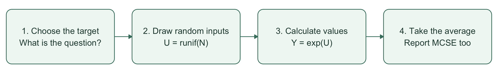
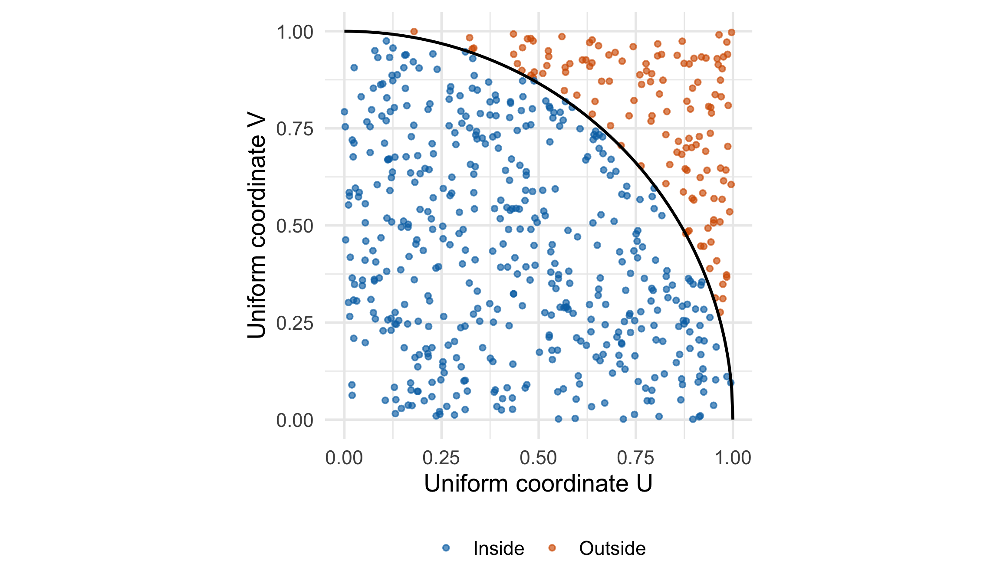
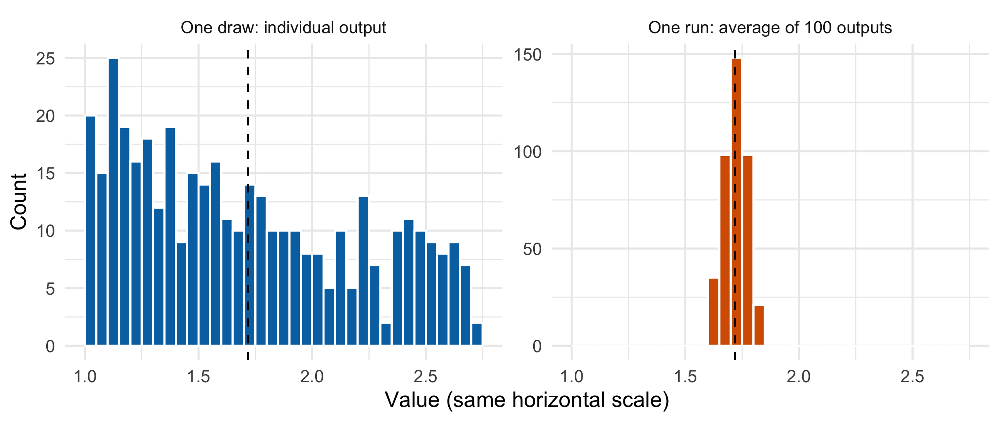
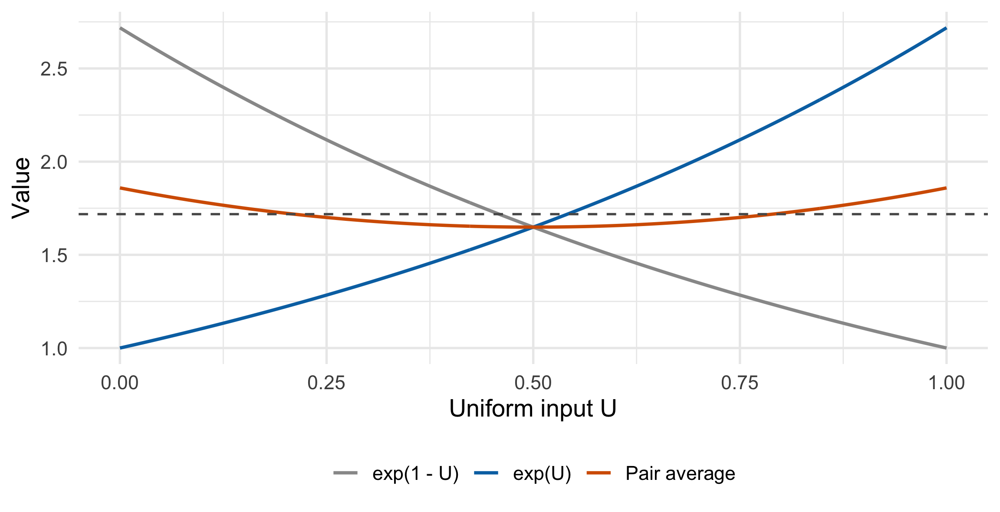
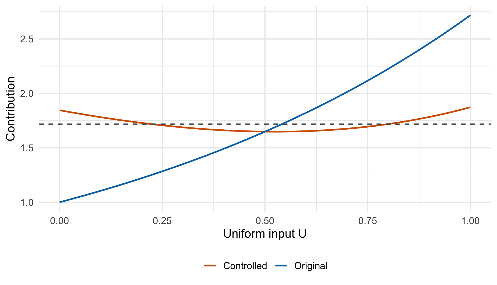
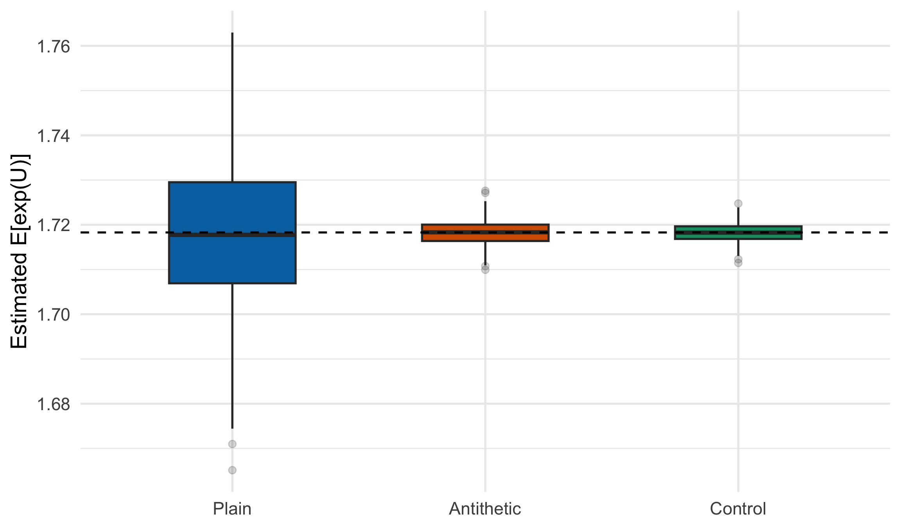
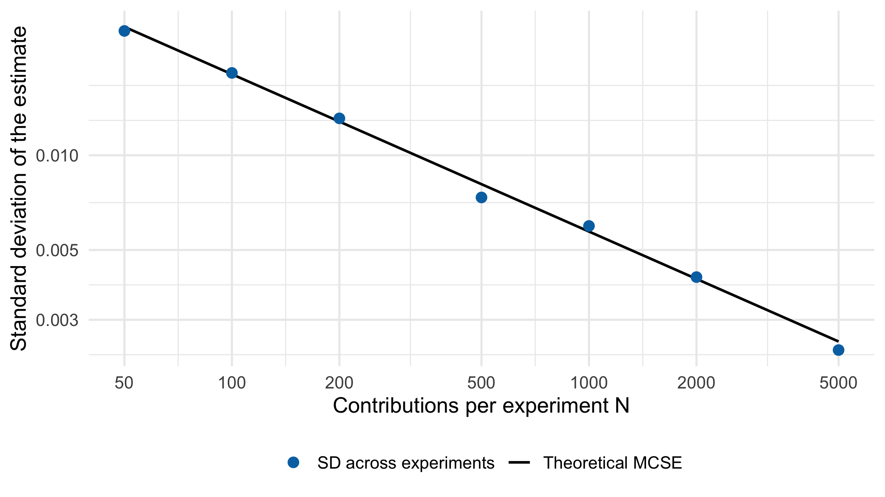
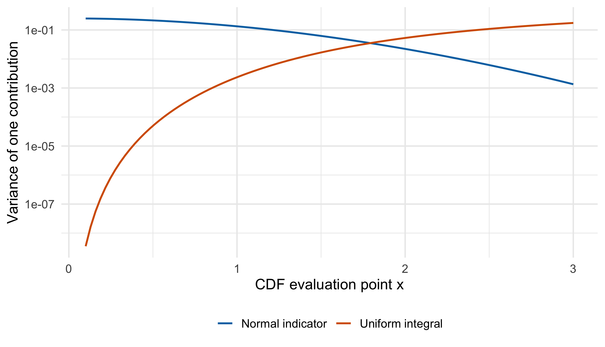

set.seed(8670)
wants_one <- runif(20) < 0.6
demand_today <- sum(wants_one)
c(demand = demand_today, insufficient = demand_today > 12)
#> demand insufficient
#> 10 05 Monte Carlo Simulation and Variance Reduction
In Chapter 4, we learned to generate random values. Here we use them to answer a question about a probability model.
The key questions are conceptual:
- Why simulate? The answer may be hard to calculate directly.
- What do we do? Generate possible inputs, calculate their outputs, and summarize.
- Where does variation come from? Fresh random inputs give a different set of outputs and a different estimate.
- What does variance reduction change? It makes the estimate more stable while keeping the same target.
We begin with a shop deciding how many muffins to prepare, then use \(\mathbb{E}[e^U]\) with \(U\sim\operatorname{Uniform}(0,1)\) to compare variance-reduction methods. Detailed formulas, proofs, and extra examples are in Supplementary.
5.1 The Main Idea: Simulate, Calculate, Average
5.1.1 Why use simulation?
Suppose a model describes uncertain inputs, and we want its average output or the probability of an event. An exact calculation may involve a difficult integral or many inputs. If we can generate inputs from the model and calculate the corresponding outputs, simulation gives us a practical numerical estimate.
Simulation uses computer-generated outcomes to explore a specified model. More simulated outcomes improve numerical precision; they do not supply new real observations or make the model more realistic.
5.1.2 What happens in one run?
One draw produces one input and its output. One run repeats this process \(N\) times and reports one estimate:
- Simulate: draw an input \(X_i\) from the specified probability model.
- Calculate: use the model to obtain \(Y_i=g(X_i)\).
- Average: repeat independently and average the \(N\) outputs.
\[ \theta=\mathbb{E}[g(X)], \qquad \widehat\theta=\frac{1}{N}\sum_{i=1}^N Y_i. \]
Here \(\theta\) is the fixed answer we want and \(\widehat\theta\) is the answer from this run. A contribution simply means one value \(Y_i\) going into the average.
5.1.3 A Practical Example: Are 12 Muffins Enough?
The question. A shop prepares 12 muffins each morning. What is the probability that demand exceeds the stock, so at least one customer cannot buy a muffin?
For this teaching example, assume 20 potential customers per day. Each independently wants one muffin with probability 0.6, whether or not stock is available. Days are independent, and these assumptions stay the same across runs. These numbers are illustrative, not estimates from shop data.
The average demand is \(20\times0.6=12\), but an average of 12 does not mean demand is always 12. Simulation lets us try many artificial days and count how often the stock is insufficient.
Step 1: Simulate one day. For each of the 20 customers, generate a uniform number between 0 and 1. A number below 0.6 means the customer wants to buy. Count the buyers. Set the seed once here; the later steps continue the same random-number stream.
This artificial day has demand 10, so the stock is sufficient. A day with demand 15 would leave 3 customers unserved. Demand 12 is still fully served: our event is demand > 12, not demand >= 12.
Step 2: Repeat for many days and record 0 or 1. Use 1 when stock is insufficient and 0 otherwise. In R, rbinom(N, size = 20, prob = 0.6) is a shortcut that generates the number of buyers for each of \(N\) independent days using exactly the same model.
N <- 1000
demand <- rbinom(N, size = 20, prob = 0.6)
insufficient <- as.integer(demand > 12)
c(days_short = sum(insufficient),
estimated_probability = mean(insufficient))
#> days_short estimated_probability
#> 423.000 0.423Step 3: Interpret the average. Stock was insufficient on 423 of the 1,000 simulated days, giving 42.3%. That is roughly 4 days out of 10 under this model. It is an estimate of the chance for a day, not a prediction of exactly which future days will have a shortage.
Step 4: Rerun the whole experiment. Each run below simulates another 1,000 days and produces one estimated probability. Continue the random-number stream from Step 1; do not reset the seed between runs.
Repeat the 1,000-day experiment with fresh random draws
shop_large_runs <- replicate(30, {
new_demand <- rbinom(1000, size = 20, prob = 0.6)
mean(new_demand > 12)
})
knitr::kable(data.frame(
Run = 1:3,
`Simulated days` = rep(1000, 3),
`Days with insufficient stock` = round(1000 * shop_large_runs[1:3]),
`Estimated chance` = sprintf("%.1f%%", 100 * shop_large_runs[1:3]),
check.names = FALSE
), booktabs = TRUE)| Run | Simulated days | Days with insufficient stock | Estimated chance |
|---|---|---|---|
| 1 | 1000 | 408 | 40.8% |
| 2 | 1000 | 410 | 41.0% |
| 3 | 1000 | 399 | 39.9% |
Why do the answers differ? The random buying decisions differ, so each run contains a different number of shortage days. The stock, purchase probability, and true shortage probability have not changed.
Code
shop_small_runs <- replicate(30, mean(rbinom(50, 20, 0.6) > 12))
shop_true_probability <- pbinom(12, 20, 0.6, lower.tail = FALSE)
shop_plot <- data.frame(
Run = rep(1:30, 2),
Estimate = c(shop_small_runs, shop_large_runs),
Budget = factor(rep(c("50 days per run", "1,000 days per run"), each = 30),
levels = c("50 days per run", "1,000 days per run"))
)
ggplot(shop_plot, aes(Run, Estimate, color = Budget)) +
geom_hline(yintercept = shop_true_probability, linetype = "dashed",
color = "grey35") +
geom_line(linewidth = .5, alpha = .7) +
geom_point(size = 1.8) +
facet_wrap(~Budget) +
scale_color_manual(values = c("#0072B2", "#D55E00")) +
scale_x_continuous(breaks = c(1, 10, 20, 30)) +
scale_y_continuous(limits = c(0, 1), breaks = seq(0, 1, .25),
labels = function(x) paste0(100 * x, "%")) +
labs(x = "Run number (fresh days in every run)",
y = "Estimated chance of insufficient stock") +
theme(legend.position = "none", strip.text = element_text(size = 12))
This simple model also has an exact binomial answer, about 41.6%, which checks our simulation. We practice the recipe here because it also works when the shop model becomes harder to calculate directly, such as when customers buy several items or demand changes during the day.
NoteTwo different kinds of variation
- Day to day: customer demand varies. Even knowing the exact shortage probability would not tell us tomorrow’s demand.
- Run to run: our estimated probability varies because each run uses only a finite number of simulated days. More simulated days reduce this numerical uncertainty; they do not make real customer demand less variable.
The practical answer is therefore: 12 muffins covers the average demand, but leaves about a 42% chance of insufficient stock under these assumptions. Choosing a stock level also requires considering shortage and leftover costs.
5.1.4 A Small Mathematical Example
Let \(U\sim\operatorname{Uniform}(0,1)\). Estimate
\[ \theta=\mathbb{E}[e^U]=\int_0^1 e^u\,du=e-1\approx1.7183. \]
The exact answer lets us check our code. In harder problems, this answer may be unavailable.
For one draw, if \(U=0.2\), the output is \(e^{0.2}\approx1.221\). This single output does not answer the average-output question; we need many draws.
set.seed(8670)
N <- 10000
u <- runif(N) # simulate
plain_y <- exp(u) # calculate one value per draw
c(estimate = mean(plain_y), exact = exp(1) - 1) # average
#> estimate exact
#> 1.726714 1.718282Why does averaging help? Any one draw can be unusually high or low. In a large collection, those fluctuations tend to balance, and each individual draw has less influence on the final answer.

NoteWhat to expect when you rerun the code
Fresh random draws usually give a different estimate. The model, function, and target stay the same. With independent draws and a finite mean, the average approaches the target as \(N\) grows, but it need not get closer after every draw.
Resetting to the same seed reproduces the same draws and answer. It does not remove simulation uncertainty. Set the seed once before a series of runs, so each run then receives fresh draws.
5.2 Two Useful Translations
5.2.1 A probability is a proportion
Give each simulated outcome a 1 if the event occurs and 0 otherwise. The average of these zeros and ones estimates the event’s probability.
Draw points uniformly in the unit square. The quarter circle has area \(\pi/4\), so
\[ \widehat\pi=4\times\frac{\text{number of points inside the quarter circle}}{N}. \]
set.seed(8670)
N <- 4000
u <- runif(N)
v <- runif(N)
pi_contributions <- 4 * (u^2 + v^2 <= 1)
mean(pi_contributions)
#> [1] 3.127Code
pi_points <- data.frame(u = u[1:600], v = v[1:600],
location = ifelse(pi_contributions[1:600] == 4, "Inside", "Outside"))
arc <- data.frame(u = seq(0, 1, length.out = 301))
arc$v <- sqrt(1 - arc$u^2)
ggplot(pi_points, aes(u, v)) +
geom_point(aes(color = location), alpha = .65, size = 1.2) +
geom_line(data = arc, linewidth = .8, color = "black") +
scale_color_manual(values = c(Inside = "#0072B2", Outside = "#D55E00")) +
coord_equal(xlim = c(0, 1), ylim = c(0, 1)) +
labs(x = "Uniform coordinate U", y = "Uniform coordinate V", color = NULL) +
theme(legend.position = "bottom")
Why multiply by 4? The proportion inside estimates \(\pi/4\). Multiplying by 4 gives an estimate of \(\pi\).
5.2.2 An integral is width times average height
For \(X\sim\operatorname{Uniform}(a,b)\),
\[ \int_a^b g(x)\,dx=(b-a)\mathbb{E}[g(X)]. \]
This gives a simple recipe: sample across the interval, average the function values, and multiply by the interval’s width.
For \(\int_2^4 e^{-x}\,dx\), the interval has width \(4-2=2\).
set.seed(8670)
N <- 10000
x <- runif(N, 2, 4)
y24 <- 2 * exp(-x) # width times the function value
c(mean_height = mean(y24) / 2,
estimate = mean(y24), exact = exp(-2) - exp(-4))
#> mean_height estimate exact
#> 0.05805926 0.11611852 0.11701964Code
height_grid <- data.frame(x = seq(2, 4, length.out = 301))
height_grid$height <- exp(-height_grid$x)
height_draws <- data.frame(x = x[1:40])
height_draws$height <- exp(-height_draws$x)
ggplot(height_grid, aes(x, height)) +
geom_area(aes(fill = "Target integral (area under curve)"), alpha = .8) +
geom_line(color = "black", linewidth = .8) +
geom_segment(data = height_draws,
aes(xend = x, y = 0, yend = height,
color = "Sampled heights (first 40 draws)",
linetype = "Sampled heights (first 40 draws)"), alpha = .4) +
geom_hline(aes(yintercept = mean(y24) / 2,
color = "Mean height (all 10,000 draws)",
linetype = "Mean height (all 10,000 draws)"), linewidth = .8) +
scale_color_manual(name = NULL,
breaks = c("Sampled heights (first 40 draws)", "Mean height (all 10,000 draws)"),
values = c("Sampled heights (first 40 draws)" = "#0072B2",
"Mean height (all 10,000 draws)" = "#D55E00")) +
scale_linetype_manual(name = NULL,
breaks = c("Sampled heights (first 40 draws)", "Mean height (all 10,000 draws)"),
values = c("Sampled heights (first 40 draws)" = "solid",
"Mean height (all 10,000 draws)" = "dashed")) +
scale_fill_manual(name = NULL,
values = c("Target integral (area under curve)" = "#E6F2EC")) +
guides(color = guide_legend(order = 1, ncol = 1,
override.aes = list(alpha = 1)),
linetype = guide_legend(order = 1, ncol = 1),
fill = guide_legend(order = 2,
override.aes = list(color = "#7DAF95", alpha = 1))) +
labs(x = "x", y = "Integrand exp(-x)",
subtitle = sprintf("Mean height = %.6f; integral estimate = %.6f",
mean(y24) / 2, mean(y24))) +
theme(legend.position = "bottom", legend.box = "vertical",
legend.text = element_text(size = 10),
legend.key.width = grid::unit(1.3, "lines"),
legend.key.height = grid::unit(.8, "lines"),
legend.margin = margin(0, 0, 0, 0),
legend.spacing.y = grid::unit(.1, "lines"))
This curve is the integrand, not a probability density on \([2,4]\). Its area is the integral we want; it need not equal 1.
Exercise 5.1 (In Class: Find the Missing Factor) A student uses mean(exp(-x)) to estimate \(\int_2^4 e^{-x}\,dx\). What factor is missing?
Solution 5.1. The width is 2. Use 2 * mean(exp(-x)), or average y24 <- 2 * exp(-x).
5.3 Where Does the Variation Come From?
In our example, runif() introduces the randomness. Once \(U\) is known, exp(U) is determined. A different set of uniforms gives different outputs, so their average also changes.
There are two levels of variation:
| Level | What changes? | What stays fixed? |
|---|---|---|
| Within one run | Individual inputs \(U_i\) and outputs \(e^{U_i}\) | The model and function |
| Across fresh runs | The average \(\widehat\theta\) | The target \(\theta=e-1\) |
Code
set.seed(8670)
variation_draws <- exp(runif(400))
variation_means <- replicate(400, mean(exp(runif(100))))
variation_data <- data.frame(
value = c(variation_draws, variation_means),
level = factor(rep(c("One draw: individual output",
"One run: average of 100 outputs"), each = 400),
levels = c("One draw: individual output",
"One run: average of 100 outputs"))
)
ggplot(variation_data, aes(value, fill = level)) +
geom_histogram(binwidth = .05, boundary = 1, color = "white") +
geom_vline(xintercept = exp(1) - 1, linetype = "dashed") +
facet_wrap(~level, scales = "free_y") +
scale_fill_manual(values = c("#0072B2", "#D55E00")) +
coord_cartesian(xlim = c(1, 2.75)) +
labs(x = "Value (same horizontal scale)", y = "Count") +
theme(legend.position = "none", strip.text = element_text(size = 11))
Read the right panel carefully: one observation in that histogram is a whole run’s average, not one simulated output. We repeat entire runs here to see the variability of the estimator.
5.3.1 SD describes outputs; MCSE describes the estimate
| Quantity | What it describes |
|---|---|
sd(y) |
How much the individual simulated values vary |
sd(y) / sqrt(N) |
How much their average would vary across repeated simulations |
The second quantity is the Monte Carlo standard error, or MCSE. We can estimate it from a single run; we do not need hundreds of runs to report it. For independent values with finite variance,
\[ \widehat{\operatorname{MCSE}}=\frac{s_Y}{\sqrt{N}}. \]
set.seed(8670)
N <- 10000
u <- runif(N)
y <- exp(u)
estimate <- mean(y)
mcse <- sd(y) / sqrt(N)
c(estimate = estimate, MCSE = mcse)
#> estimate MCSE
#> 1.726713868 0.004941385A smaller MCSE means less simulation noise. For a sufficiently large sample, an approximate 95% Monte Carlo interval is
\[ \widehat\theta\ \pm\ 1.96\,\widehat{\operatorname{MCSE}}. \]
c(lower = estimate - 1.96 * mcse,
upper = estimate + 1.96 * mcse)
#> lower upper
#> 1.717029 1.736399
WarningWhat this interval means
It measures uncertainty caused by the simulation, with the probability model held fixed. It does not include uncertainty about whether the model matches reality or about parameters estimated from real data. A tiny MCSE does not fix a wrong formula or a coding mistake.
For a rare event, seeing zero successes does not prove the probability is zero; the simple MCSE formula can be misleading in that case.
5.3.2 The rule of four
MCSE decreases like \(1/\sqrt{N}\). To halve MCSE, use about four times as many draws.
Larger \(N\) makes the average more stable. Individual outputs still come from the same distribution and retain the same underlying variability.
For example, if 1,000 draws give MCSE 0.02, then 4,000 draws should give MCSE about 0.01. This is a planning approximation, not a guarantee for one run.
Exercise 5.2 (In Class: Halve the MCSE) A run with 2,000 draws has MCSE 0.04. About how many draws are needed for MCSE 0.02?
Solution 5.2. Use about \(4\times2000=8000\) draws.
5.4 Variance Reduction: A More Stable Average
Increasing \(N\) is one way to improve precision. Another is to keep the same target but average less variable values.
We are reducing the variation of our numerical estimate across runs. We are not making the modeled system itself less random. Simply forcing every answer toward a convenient number would change the question; a valid method must preserve the target.
For the muffin shop, this means obtaining more stable estimates of the shortage probability with the stock still fixed at 12. Preparing more muffins changes the probability being estimated; that is a different stocking policy, not variance reduction.
We will try two methods:
| Method | Idea |
|---|---|
| Antithetic variables | Pair a high value with a low value, then average the pair |
| Control variates | Use a quantity with a known mean to correct some of the noise |
For a fair comparison, use the same target and count the work. In our examples, we give each method the same number of evaluations of exp().
A method is better when its estimates vary less across repeated experiments. Being closer to the answer in one run can just be luck.
5.5 Antithetic Variables: Pair Opposites
Keep the target \(\theta=\mathbb{E}[e^U]\). Since both \(U\) and \(1-U\) are uniform, both \(e^U\) and \(e^{1-U}\) have expectation \(\theta\).
If \(U=0.2\), the two values are approximately 1.221 and 2.226. Their average is 1.723. As \(U\) increases, one value rises and the other falls, so the pair average is more stable.
- Draw \(K\) independent uniforms.
- For each uniform, calculate the pair average
\[ A_k=\frac{e^{U_k}+e^{1-U_k}}{2}. \]
- Average the \(K\) pair averages.
Each pair uses two evaluations of exp(): 500 pairs cost 1,000 evaluations.
set.seed(8670)
K <- 500
u <- runif(K)
pair_y <- (exp(u) + exp(1 - u)) / 2
c(estimate = mean(pair_y), MCSE = sd(pair_y) / sqrt(K),
exact = exp(1) - 1)
#> estimate MCSE exact
#> 1.72051417 0.00282637 1.71828183
WarningCount pairs when calculating MCSE
The two values within a pair are dependent. The pair averages are independent across pairs. Use sd(pair_y) / sqrt(K), with \(K\) equal to the number of pairs.
Code
anti_grid <- seq(0, 1, length.out = 301)
anti_curves <- rbind(
data.frame(u = anti_grid, value = exp(anti_grid), Method = "exp(U)"),
data.frame(u = anti_grid, value = exp(1 - anti_grid), Method = "exp(1 - U)"),
data.frame(u = anti_grid, value = (exp(anti_grid) + exp(1 - anti_grid)) / 2,
Method = "Pair average")
)
ggplot(anti_curves, aes(u, value, color = Method)) +
geom_line(linewidth = .9) +
geom_hline(yintercept = exp(1) - 1, linetype = "dashed", color = "grey35") +
scale_color_manual(values = c("exp(U)" = "#0072B2", "exp(1 - U)" = "#999999",
"Pair average" = "#D55E00")) +
labs(x = "Uniform input U", y = "Value", color = NULL) +
theme(legend.position = "bottom")
When does it help? When the two output values tend to move in opposite directions. Reflection alone does not guarantee improvement. For example, \(g(u)=(u-1/2)^2\) gives identical values at \(u\) and \(1-u\), so the pair adds no new information.
Exercise 5.3 (In Class: What Is the Sample Size?) You generate 500 independent pairs. Should the MCSE use sqrt(500) or sqrt(1000) in the denominator, and which values go into sd()?
Solution 5.3. Use sd(pair_y) / sqrt(500): there are 500 independent pair averages.
5.6 Control Variates: Use a Known Mean
Again, estimate \(\mathbb{E}[e^U]\). We know that \(\mathbb{E}[U]=0.5\).
If the sampled uniforms happen to be large, the sampled values of \(e^U\) also tend to be large. We can use \(U-0.5\) to correct part of this fluctuation:
\[ Y_{\mathrm{adj}}=e^U+c(U-0.5). \]
For any fixed \(c\), the adjustment has expectation zero. It changes the variability while keeping the same target.
5.6.1 Which direction should the correction go?
We use \(c=-1.7\), which is close to the best coefficient for this example:
- If the sampled inputs are unusually large on average, their outputs also tend to be large. The correction moves the estimate down.
- If the sampled inputs are unusually small on average, the correction moves the estimate up.
- Across repeated runs, the correction averages to zero, so the target stays the same.
The coefficient controls the size of this correction. Its optimal formula and derivation are in Supplementary.
set.seed(8670)
N <- 10000
u <- runif(N)
c_used <- -1.7
controlled_y <- exp(u) + c_used * (u - 0.5)
c(estimate = mean(controlled_y),
MCSE = sd(controlled_y) / sqrt(N), exact = exp(1) - 1)
#> estimate MCSE exact
#> 1.718693272 0.000625505 1.718281828Code
control_grid <- seq(0, 1, length.out = 301)
control_curves <- rbind(
data.frame(u = control_grid, value = exp(control_grid), Method = "Original"),
data.frame(u = control_grid,
value = exp(control_grid) + c_used * (control_grid - .5), Method = "Controlled")
)
ggplot(control_curves, aes(u, value, color = Method)) +
geom_line(linewidth = .9) +
geom_hline(yintercept = theta_exp, linetype = "dashed", color = "grey35") +
scale_color_manual(values = c(Original = "#0072B2", Controlled = "#D55E00")) +
labs(x = "Uniform input U", y = "Value being averaged", color = NULL) +
theme(legend.position = "bottom")
WarningThe control mean must be known
Use the known mean 0.5, not mean(u). Subtracting mean(u) would make the average adjustment zero and leave the original estimate unchanged.
If you need to estimate \(c\), use a separate pilot sample and then keep \(c\) fixed for the main run. A worked example is in Supplementary.
Exercise 5.4 (In Class: Which Sign Removes the Noise?) In one run, mean(u) is 0.55 instead of the known mean 0.5. Would you expect mean(exp(u)) to be too high or too low? With \(c=-1.7\), which direction does the correction move it? Must this run become closer to the truth?
Solution 5.4. It tends to be too high. The average correction is \(-1.7(0.55-0.5)=-0.085\), so it moves downward. Improvement is about smaller variability across repeated runs; a particular run is not guaranteed to be closer to the truth.
5.7 Compare the Three Methods
We repeat the estimation of \(\mathbb{E}[e^U]\) 800 times. Every experiment gives each method 1,000 evaluations of exp():
- Plain: average 1,000 values of \(e^U\).
- Antithetic: average 500 pair averages.
- Control: average 1,000 adjusted values, using fixed \(c=-1.7\).
Different experiments use fresh random draws. Less vertical spread in the boxplot means the method gives more stable answers.
Here \(N=1000\) is the work budget for one estimate, while \(B=800\) is how many times we repeat the experiment to compare methods. We keep the 800 estimates separate to inspect their spread.
Repeated experiments with the correct MCSE for each method
set.seed(8670)
N <- 1000
B <- 800
benchmark <- replicate(B, {
u <- runif(N)
raw_y <- exp(u)
pair_index <- seq_len(N / 2)
outputs <- list(
Plain = raw_y,
Antithetic = (raw_y[pair_index] + exp(1 - u[pair_index])) / 2,
Control = raw_y + c_used * (u - .5)
)
vapply(outputs, function(y) {
c(Estimate = mean(y), MCSE = sd(y) / sqrt(length(y)))
}, numeric(2))
})
benchmark_estimates <- benchmark["Estimate", , ]
benchmark_mcses <- benchmark["MCSE", , ]
benchmark_variances <- apply(benchmark_estimates, 1, var)
benchmark_table <- data.frame(
Method = rownames(benchmark_estimates),
Bias = rowMeans(benchmark_estimates) - theta_exp,
Empirical_SD = sqrt(benchmark_variances),
Mean_MCSE = rowMeans(benchmark_mcses),
Reduction_percent = 100 * (1 - benchmark_variances / benchmark_variances["Plain"]),
row.names = NULL
)
knitr::kable(benchmark_table[, c("Method", "Empirical_SD", "Reduction_percent")],
digits = c(0, 5, 1), booktabs = TRUE,
col.names = c("Method", "SD of repeated estimates", "Variance removed (%)"))| Method | SD of repeated estimates | Variance removed (%) |
|---|---|---|
| Plain | 0.01563 | 0.0 |
| Antithetic | 0.00276 | 96.9 |
| Control | 0.00203 | 98.3 |
Code
benchmark_long <- data.frame(
Method = factor(rep(rownames(benchmark_estimates), each = B),
levels = c("Plain", "Antithetic", "Control")),
Estimate = as.vector(t(benchmark_estimates))
)
ggplot(benchmark_long, aes(Method, Estimate, fill = Method)) +
geom_boxplot(width = .5, outlier.alpha = .2) +
geom_hline(yintercept = theta_exp, linetype = "dashed") +
scale_fill_manual(values = c(Plain = "#0072B2", Antithetic = "#D55E00",
Control = "#009E73")) +
labs(x = NULL, y = "Estimated E[exp(U)]") +
theme(legend.position = "none")
What should students notice? All three methods aim at the same dashed line. Antithetic pairing and the control adjustment produce a tighter cluster of estimates. The improvement comes from how we construct the values being averaged.
These results apply to this example. A method’s name alone does not guarantee a gain. If runtime matters, also count pilot runs and the work needed to calculate a control.
5.8 Quick Check
Exercise 5.5 (True or False?)
- A different random seed changes the target \(\mathbb{E}[e^U]\).
- Increasing \(N\) makes the average more stable, even though individual outputs still vary.
- Reusing the same seed proves that the estimate has no simulation uncertainty.
- Variance reduction aims to keep the same target while reducing the spread of estimates.
Solution 5.5.
| Item | Answer | Reason |
|---|---|---|
| 1 | F | The target is fixed; the random draws and estimate change. |
| 2 | T | Averaging reduces simulation noise in the estimate. |
| 3 | F | The same seed reproduces the same draws; fresh draws would give other estimates. |
| 4 | T | We improve the estimator’s stability while preserving its expectation. |
Exercise 5.6 (Check the Code)
- For \(\int_1^3 x^2\,dx\), you draw
x <- runif(N, 1, 3). What values should you average? - You have 500 antithetic pair averages stored in
pair_y. Write the estimate and MCSE. - Why does
mean(exp(u) - 1.7 * (u - mean(u)))equalmean(exp(u))?
Solution 5.6.
- Average
2 * x^2, because the interval width is 2. - Use
mean(pair_y)andsd(pair_y) / sqrt(500). - The average of
u - mean(u)is zero. Use the known mean 0.5 for the control adjustment.
5.9 What to Remember
Simulation answers a model-based question by generating possible outcomes. One run produces one estimate. Fresh runs vary because their random inputs vary. MCSE describes this variation of the estimate; variance reduction makes it smaller while preserving the target.
| Method | Values to average | MCSE |
|---|---|---|
| Plain MC | Individual values y |
sd(y) / sqrt(N) |
| Antithetic | Pair averages pair_y |
sd(pair_y) / sqrt(K) |
| Control | Adjusted values \(Y_i+c(C_i-\mu_C)\) | sd(adjusted_y) / sqrt(N) |
Here \(N\) counts independent draws and \(K\) counts independent pairs. Keep the target unchanged, use the correct independent units, and compare methods at the same amount of work.
5.10 Supplementary
The content here won’t be on the exam
These examples are for independent study.
5.10.1 Why the average works
For independent, identically distributed values \(Y_i\) with \(\mathbb{E}|Y_i|<\infty\), their average is unbiased for \(\theta=\mathbb{E}[Y_i]\) and converges to \(\theta\) almost surely. This is the strong law of large numbers.
If \(\operatorname{Var}(Y_i)=\sigma_Y^2<\infty\), independence gives
\[ \operatorname{Var}(\overline Y)=\frac{\sigma_Y^2}{N}. \]
When \(0<\sigma_Y^2<\infty\), the central limit theorem gives
\[ \frac{\overline Y-\theta}{\sigma_Y/\sqrt N}\xrightarrow{d}N(0,1), \]
which explains the approximate 95% interval. In R, sd(y) uses the sample-variance denominator \(N-1\).
5.10.2 Planning a sample size
For target MCSE \(\varepsilon\), use approximately \(N\geq\sigma_Y^2/\varepsilon^2\). For a 95% interval half-width \(h\), use approximately
\[ N\geq\frac{1.96^2\sigma_Y^2}{h^2}. \]
If the variance is unknown, estimate it in a pilot run. This gives a planning approximation, not a guaranteed bound.
Code
set.seed(8670)
precision_sizes <- c(50, 100, 200, 500, 1000, 2000, 5000)
variance_exp <- (exp(2) - 1) / 2 - (exp(1) - 1)^2
precision_results <- data.frame(N = precision_sizes)
precision_results$empirical <- vapply(precision_sizes, function(n) {
sd(replicate(400, mean(exp(runif(n)))))
}, numeric(1))
precision_results$theoretical <- sqrt(variance_exp / precision_sizes)
ggplot(precision_results, aes(N)) +
geom_line(aes(y = theoretical, color = "Theoretical MCSE"), linewidth = .8) +
geom_point(aes(y = empirical, color = "SD across experiments"), size = 2.7) +
scale_x_log10(breaks = precision_sizes) +
scale_y_log10() +
scale_color_manual(values = c("Theoretical MCSE" = "black",
"SD across experiments" = "#0072B2")) +
labs(x = "Draws per experiment N",
y = "Standard deviation of the estimate", color = NULL) +
theme(legend.position = "bottom")
5.10.3 Reporting variance reduction
The percentage reported in our comparison table is
\[ 100\left(1-\frac{\text{variance of estimates with the new method}}{\text{variance of estimates with plain Monte Carlo}}\right). \]
If variance falls from 4 to 1, the reduction is 75%. Standard error falls from 2 to 1, a 50% reduction. Variance and standard error are on different scales.
5.10.4 Why antithetic pairing helps
Let \(Y=g(U)\) and \(Y'=g(1-U)\) have variance \(\sigma^2>0\) and correlation \(\rho\). For one pair average,
\[ \operatorname{Var}\left(\frac{Y+Y'}2\right)=\frac{\sigma^2}{2}(1+\rho). \]
With \(K\) independent pairs and \(N=2K\) evaluations,
\[ \operatorname{Var}(\widehat\theta_{\mathrm{anti}}) =\frac{\sigma^2}{N}(1+\rho), \qquad \operatorname{Var}(\widehat\theta_{\mathrm{plain}})=\frac{\sigma^2}{N}. \]
Thus, negative correlation helps; positive correlation makes the estimator worse at this budget.
A monotone \(g\) with finite variance guarantees nonpositive covariance. To see why, let \(V\) be an independent copy of \(U\). Then
\[ 2\operatorname{Cov}(a(U),b(U)) =\mathbb{E}[(a(U)-a(V))(b(U)-b(V))]. \]
For \(a(u)=g(u)\) and \(b(u)=g(1-u)\), one function increases while the other decreases. The product is nonpositive.
5.10.5 Deriving the control coefficient
Assume \(Y\) and \(C\) have finite, positive variances. For fixed \(c\) and known \(\mu_C=\mathbb{E}[C]\),
\[ \operatorname{Var}\{Y+c(C-\mu_C)\} =\operatorname{Var}(Y)+c^2\operatorname{Var}(C)+2c\operatorname{Cov}(Y,C). \]
Differentiate with respect to \(c\) and set the result to zero:
\[ c^*=-\frac{\operatorname{Cov}(Y,C)}{\operatorname{Var}(C)}, \qquad \operatorname{Var}(Y_{c^*})=\operatorname{Var}(Y)(1-\rho_{YC}^2). \]
At the optimal coefficient, the fraction of variance removed is \(\rho_{YC}^2\). Strong positive or negative correlation can both help.
For \(Y=e^U\) and \(C=U\), integration by parts gives \(\mathbb{E}[Ue^U]=1\). Therefore,
\[ \operatorname{Cov}(e^U,U)=1-\frac{e-1}{2}, \quad \operatorname{Var}(U)=\frac1{12}, \quad c^*=6e-18\approx-1.690309. \]
var_exp <- (exp(2) - 1) / 2 - (exp(1) - 1)^2
cov_exp_u <- 1 - (exp(1) - 1) / 2
c_star <- -cov_exp_u / (1 / 12)
var_optimal <- var_exp - cov_exp_u^2 / (1 / 12)
var_used <- var_exp + c_used^2 / 12 + 2 * c_used * cov_exp_u
c(best_coefficient = c_star,
optimal_reduction_percent = 100 * (1 - var_optimal / var_exp),
reduction_with_minus_1.7 = 100 * (1 - var_used / var_exp))
#> best_coefficient optimal_reduction_percent reduction_with_minus_1.7
#> -1.690309 98.372048 98.368815The covariance is squared in the variance reduction, but not in the formula for \(c^*\). Our fixed choice \(-1.7\) gives nearly the same reduction as the optimum.
5.10.6 Estimating the coefficient in a pilot run
When \(c^*\) is unknown, estimate it using a separate pilot sample. Keep that estimate fixed, then generate fresh draws for the main run.
set.seed(8670)
pilot_u <- runif(1000)
c_hat <- -cov(exp(pilot_u), pilot_u) / var(pilot_u)
production_u <- runif(10000) # fresh draws; do not reset the seed
production_y <- exp(production_u) + c_hat * (production_u - 0.5)
c(coefficient = c_hat, mc_summary(production_y))
#> coefficient estimate MCSE lower upper
#> -1.6987553233 1.7186253605 0.0006270268 1.7173963881 1.7198543330Conditional on the pilot, the coefficient is fixed and the adjustment still has mean zero. Estimating and applying \(c\) on the same observations does not automatically preserve exact unbiasedness. Include the pilot cost when comparing total work.
5.10.7 Application: Estimate a Normal Probability
The original notes used \(\Phi(x)=P(Z\leq x)\) for \(Z\sim N(0,1)\). We can estimate this probability in two ways.
Method 1: count successes. Draw standard normals and average the indicators of \(Z\leq x\).
set.seed(8670)
x <- 2
N <- 10000
indicator_y <- as.numeric(rnorm(N) <= x)
c(estimate = mean(indicator_y),
MCSE = sd(indicator_y) / sqrt(N),
exact = pnorm(x))
#> estimate MCSE exact
#> 0.978600000 0.001447209 0.977249868Method 2: use a bounded integral. For \(x>0\), symmetry gives
\[ \Phi(x)=\frac12+\int_0^x\phi(z)\,dz =\frac12+\mathbb{E}[x\phi(xU)], \qquad U\sim\operatorname{Uniform}(0,1). \]
Thus we can average \(0.5+x\phi(xU)\).
set.seed(8670)
u <- runif(N)
uniform_y <- 0.5 + x * dnorm(x * u) # x > 0 here
c(estimate = mean(uniform_y),
MCSE = sd(uniform_y) / sqrt(N),
exact = pnorm(x))
#> estimate MCSE exact
#> 0.973362243 0.002312272 0.977249868Both methods estimate the same probability, but their variances differ. For \(x<0\), use symmetry, \(\Phi(x)=1-\Phi(|x|)\); at \(x=0\), the answer is exactly 0.5.
We cannot draw uniformly over the infinite interval \((-\infty,x]\). The second method works because it uses the finite interval \([0,x]\).
Code
cdf_grid <- seq(.1, 3, length.out = 100)
cdf_variances <- data.frame(
x = cdf_grid,
Indicator = pnorm(cdf_grid) * pnorm(cdf_grid, lower.tail = FALSE),
Uniform = vapply(cdf_grid, function(a) {
integrate(function(u) (a * dnorm(a * u))^2, 0, 1)$value -
(pnorm(a) - .5)^2
}, numeric(1))
)
cdf_variance_long <- rbind(
data.frame(x = cdf_grid, variance = cdf_variances$Indicator,
Method = "Normal indicator"),
data.frame(x = cdf_grid, variance = cdf_variances$Uniform,
Method = "Uniform integral")
)
ggplot(cdf_variance_long, aes(x, variance, color = Method)) +
geom_line(linewidth = .85) +
scale_y_log10() +
scale_color_manual(values = c("Normal indicator" = "#0072B2",
"Uniform integral" = "#D55E00")) +
labs(x = "CDF evaluation point x", y = "Variance of one contribution",
color = NULL) +
theme(legend.position = "bottom")
The better choice depends on \(x\). At the same number of independent draws, divide each plotted contribution variance by \(N\) to obtain the estimator variance. A contribution such as \(0.5+x\phi(xU)\) can exceed 1 even though its expectation is a probability.
5.10.8 Two more variance-reduction ideas
- Importance sampling: draw more often where the integrand matters, then correct for the changed sampling distribution with weights. For \(\theta=\int g(x)f(x)\,dx\), draw \(X\sim q\) and average \(g(X)f(X)/q(X)\). The proposal must cover every region where \(g(x)f(x)\neq0\), and a finite second moment is needed for ordinary MCSE calculations.
- Stratification: divide the input space into groups with known probabilities, sample within each group, and combine the group averages using those probabilities as weights.
WarningNormalization still matters
The ordinary importance-sampling formula above uses a normalized target density \(f\). With only an unnormalized target, a self-normalized ratio estimator is a different method and is generally biased at finite sample sizes. Cancellation of a constant in rejection sampling does not justify dropping a constant from an importance weight.
References and Further Reading
Adapted from the instructor’s 2025 Monte Carlo notes. All figures are generated by the R code in this chapter.
- Rizzo, M. L. (2007), Statistical Computing with R, Chapter 6, Chapman & Hall/CRC.
- Wasserman, L. (2003), All of Statistics, Springer.
- R help:
?runif,?rnorm,?pnorm,?var, and?cov.